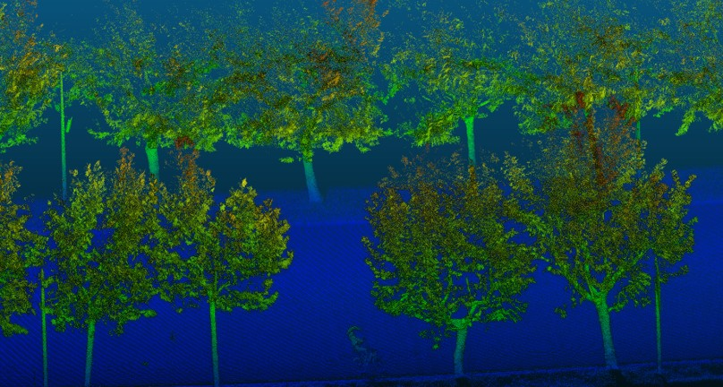
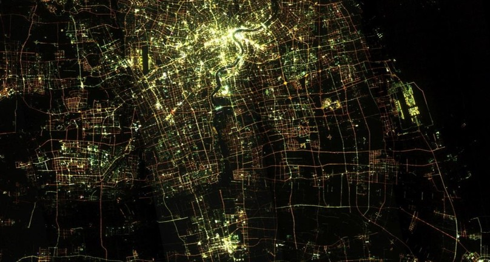

中山大学遥感科学与技术学院“百人计划”副教授。聚焦城市遥感，从事激光雷达遥感、夜间灯光遥感、城市可持续发展等方向的研究工作。先后主持了包括国家自然科学基金项目(面上/青年)、广东省自然科学基金面上项目、上海市青年科技英才扬帆计划项目、中国博士后科学基金特别资助等国家级和省部级项目多项，已在RSE、ISPRS P&RS、IJGIS等国内外遥感和GIS顶级专业期刊发表学术论文60余篇，3篇ESI前1%高被引论文，Google Scholar引用次数超3300余次。

多源激光雷达（星载、机载、车载、地基）数据处理与信息提取，如点云配准、建筑和行道树提取等。

可持续发展卫星SDGSAT-1微光数据、NPP/VIIRS、DMSP/OLS等夜间灯光数据处理与信息挖掘。
重点关注智慧城市与可持续发展，人居环境三维信息表征与评价，例如三维可视率、绿视率、环境暴露等。
... 更多论文请参阅个人Google Scholar
教育部科学研究优秀成果奖（工程技术研究成果奖）二等奖 (2025)
易智瑞杯中国大学生GIS软件开发竞赛优秀指导老师 (2025)
地理信息科技进步奖一等奖 (2025)
第二届全国激光雷达遥感讲课比赛一等奖 (2025)
中山大学第十三届教师教学竞赛教学创新赛道优秀奖 (2025)
广东高校思想政治工作优秀网络课程三等奖 (2025)
广东高校思想政治工作优秀论文三等奖 (2025)
第十二届高校GIS论坛优秀教学成果奖 (2024)
中山大学第十二届教师教学竞赛教学创新赛道二等奖 (2024)
全国高校教师国家安全教育教学风采展示优秀风采教师 (2024)
易智瑞杯中国大学生GIS软件开发竞赛优秀指导老师 (2023)
第二届中国激光雷达青年科学家提名奖 (2023)